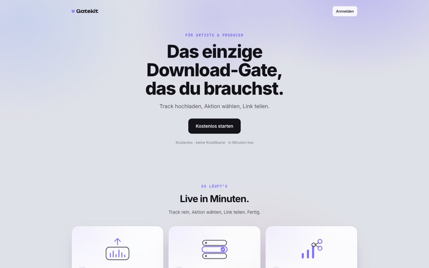
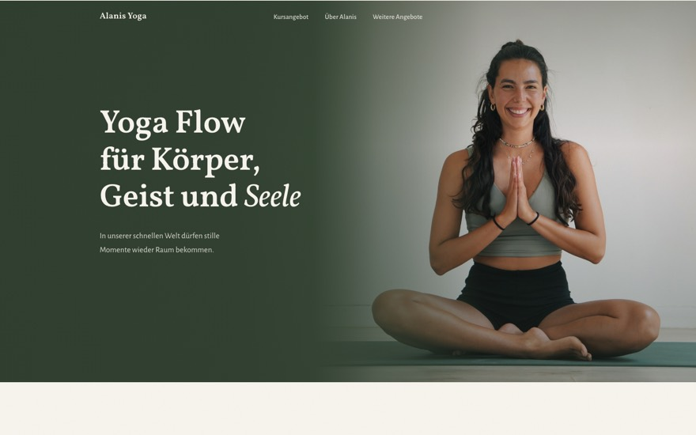
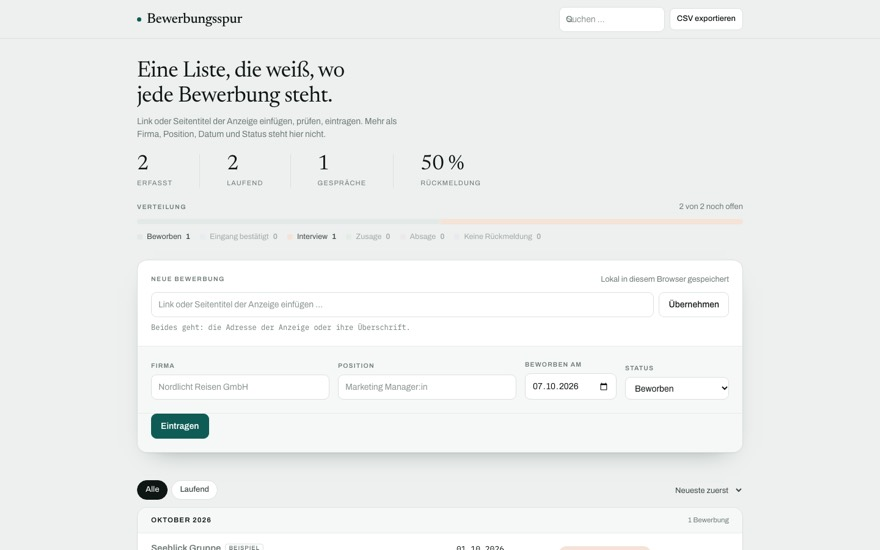

Projekte
Woran ich gearbeitet habe.
Ein paar Sachen sind für Kunden entstanden, andere für mich selbst. Alles, was online ist, kannst du dir direkt ansehen.

Gatekit
gatekit.pro ↗Produzenten geben ihre Tracks oft gegen einen Repost oder einen Follow heraus. Bei Gatekit lädt man den Track hoch, legt fest, was dafür passieren soll, und teilt den Link. Ob die Aktion auf SoundCloud tatsächlich stattgefunden hat, prüft der Server nach. Dazu kommen E-Mail-Liste, Dashboard und die Abrechnung der Abos.

Bepoa
ausprobieren ↗Entstanden ist Bepoa aus meiner eigenen Jobsuche. Jeden Morgen schlägt es passende Stellen vor, auf Basis vom Lebenslauf und dem, wonach man sucht. Was davon interessant ist, wandert in eine Übersicht und lässt sich von dort Schritt für Schritt bis zur fertigen Bewerbung weiterschieben.

Alanis Yoga
ansehen ↗Hier habe ich die ganze Website gebaut, von den Angeboten über die Bildergalerie bis zu den Schriften. Und was sich seitdem ändert, neue Kurstermine, ein Retreat, das dazukommt, mache ich für sie mit.

Boniersystem
im Betrieb, nicht öffentlichGäste scannen am Tisch einen QR-Code und bestellen, der Bon landet sofort auf dem Handy der Bedienung. Eine Sammelliste zeigt dann, was sich in einem Gang an Schänke und Küche abholen lässt. Das lief auf dem Oktoberfest im laufenden Betrieb und nicht nur im Test.
Die Bestellungen im Bild sind erfunden.

Bewerbungsübersicht
kleines WerkzeugGebaut habe ich das, weil mich eine Tabelle genervt hat. Man fügt den Link zur Stellenanzeige ein, Position und Unternehmen werden automatisch ausgelesen, fertig ist der Eintrag. An einem Tag entstanden, mehr hat es nicht gebraucht.